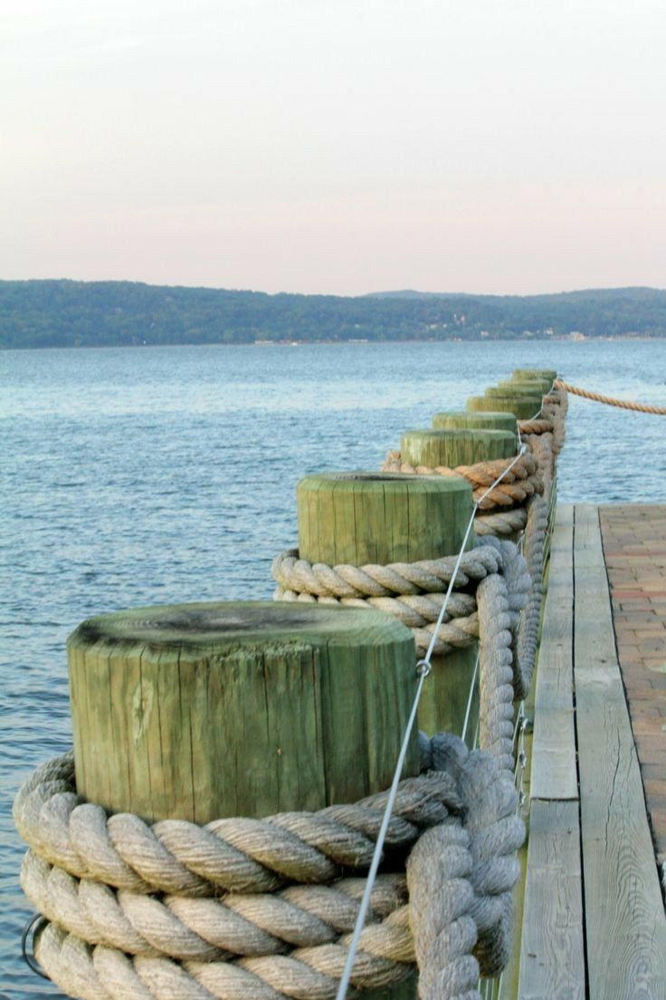

Fuel berth
Fish Quay, east end. 08:00–18:00, closed Tuesdays 07:00–09:00 for delivery.
- Diesel
- £1.42 per litre
- Petrol
- £1.61 per litre
- Depth alongside
- 1.8 m at chart datum
- Payment
- Card at the pump
Mon 5 Oct 10:40 BSTTide 2.83 m risingHW 14:13 4.20 mLW 19:50 1.84 mOver the sill 0.93 mWind SW 4, gusts 21 kn
Fuel, water, showers, laundry, crane and slipway. Where each is and when it opens.
Fish Quay, east end. 08:00–18:00, closed Tuesdays 07:00–09:00 for delivery.
Every pontoon and the Fish Quay. 24 hours.
Harbour Office, ground floor. 24 hours, door code from the office.
Harbour Office, ground floor. 07:00–21:00.
Boatyard, west side. Weekdays by appointment.
Harbour Beach. Half tide and above.
Fish Quay, west end. 24 hours.
Harbour Office and pontoons. 24 hours.
